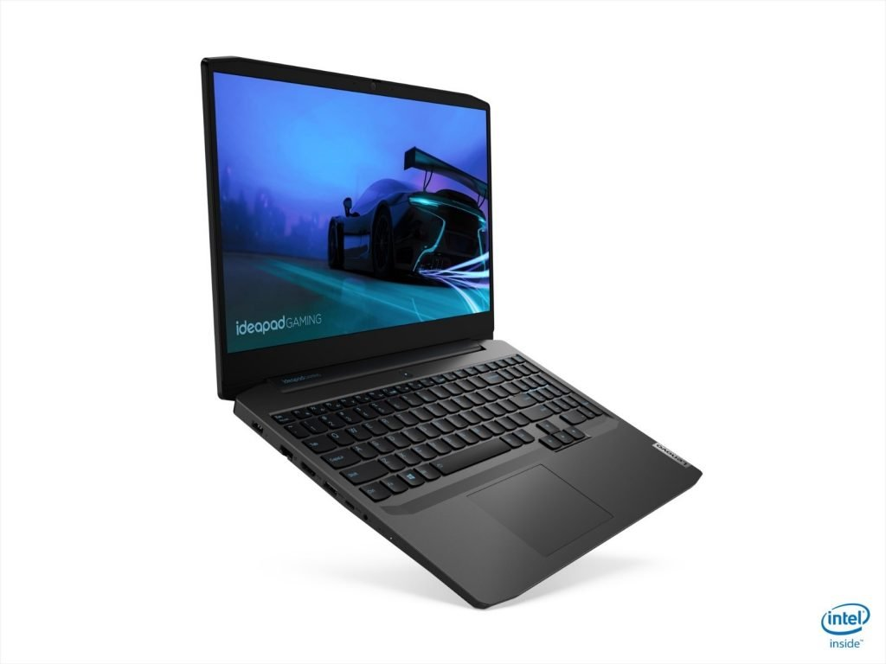
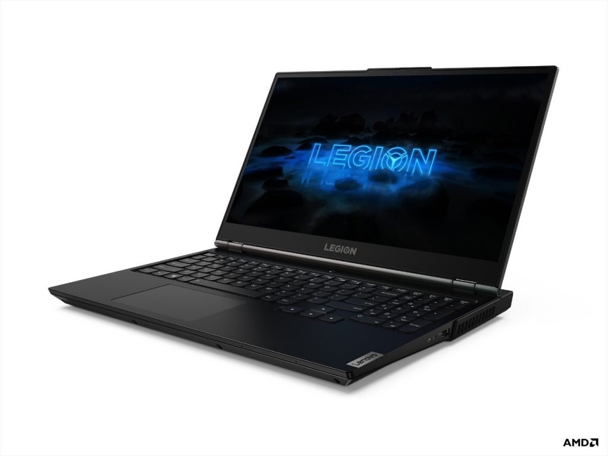
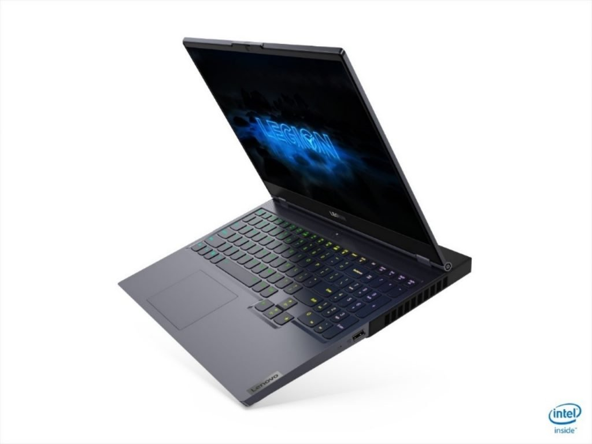

Legion3
Laptop IdeaPad Gaming 3i yang memiliki harga lebih terjangkau. Harga laptop gaming Lenovo ini yang berukuran 15 inci adalah mulai dari Rp13.499.000 dan akan tersedia di Indonesia mulai Juni 2020.
Dirancang untuk menghilangkan screen stuttering, load game yang lambat, dan keyboard yang tebal, laptop IdeaPad Gaming 3i dengan pilihan refresh rates 120Hz menggunakan hingga prosesor mobile Intel Core i7 Generasi ke-10 H-Series.
Sesi gaming beroktan tinggi yang menggunakan laptop baru ini dapat bertahan lebih lama dari sebelumnya. IdeaPad Gaming 3 didukung oleh termal yang telah ditingkatkan dengan tambahan heat pipe khusus untuk discrete GPU serta ditambah lagi dengan dual ventilasi termal untuk sirkulasi udara yang lebih baik.
Display IPS Full HD (1920 x 1080) berukuran 15 inci memiliki desain dengan bezel tipis. Anda dapat memilih dari refresh rate 120Hz dan NVIDIA GeForce GTX 1650 Ti GPU untuk pengalaman bermain game yang lebih baik.
Gaming notebook yang lebih canggih di kelasnya ini dilengkapi dengan Lenovo Q-Control 3.0 untuk mengubah ke mode performance dan memiliki daya tahan baterai hingga 8 jam dengan Rapid Charge.
Tersedia dengan dua warna yang menarik, Chameleon Blue dan Onyx Black, IdeaPad Gaming 3i hanya seberat 2,2 kg dan menghadirkan keyboard dengan backlit berwarna biru.
Sebagai pelengkap, Lenovo Indonesia memberikan Accidental Damage Protection dan Onsite Warranty selama dua tahun senilai Rp1.250.000. Garansi dapat digunakan untuk berbagai kerusakan dari tumpahan kopi, terjatuh dari meja, malfungsi keyboard, hingga LDC retak.
Selain itu, rangkaian laptop gaming Lenovo sudah dilengkapi dengan Microsoft Office Home & Student 2019.
Legion5
Lenovo Legion adalah gaming notebook mainstream Windows 10 yang menawarkan beberapa pilihan konfigurasi dan grafis NVIDIA GeForce yang lebih tinggi. Seluruh model pada seri Lenovo Legion 5i dan 5 menyediakan pengaturan termal Lenovo Legion Coldfront 2.0, keyboard Lenovo Legion TrueStrike, dan daya tahan baterai yang ditingkatkan (hingga 8 jam) menggunakan teknologi seperti Advanced Optimus dan Hybrid Mode.
Laptop gaming ini juga dilengkapi dengan Wi-Fi 6, Dolby Atmos, warna Phantom Black serta hadir dengan Rapid Charge Pro dan hingga memori 16GB DDR4.
Lenovo Legion 5i (15”, prosesor mobile Intel Core Generasi Ke-10 H-Series)
Legion 5i memiliki prosesor terbaru Intel Core Generasi ke-10 H-series dan GTX 1660Ti GPU.
Laptop ini memiliki display 15,6” IPS 1080p dengan hingga 144Hz refresh rate. Dilengkapi dengan color-accurate display 100% sRGB, gaming notebook ini menghasilkan gambar yang sangat nyata dan tajam untuk pekerjaan detail dalam editing foto atau video.
Selain itu, Legion 5i telah disertifikasi oleh UL Verification Services, sebuah lab pengujian, karena dapat bekerja selama 9 jam pada maksimum clockspeed dengan zero throttling, serta mampu mempertahankan performa tinggi secara konsisten.
Harga laptop gaming terbaru ini adalah mulai dari Rp16.999.000 dan tersedia di Indonesia mulai Juni 2020.
Lenovo Legion 5 (15”, prosesor mobile AMD Ryzen 4000 H-Series)
Gaming notebook ini menawarkan performa gaming yang maksimal dengan prosesor mobile AMD Ryzen 7 4000 H-Series terbaru dengen 8 cores, dan grafis hingga NVIDIA® GeForce GTX 1650Ti untuk kejernihan visual dari real-time ray tracing. Legion 5 memiliki display 15,6 inci IPS 1080p dengan refresh rates hingga 144Hz, HDR, dan akurasi warna 100% sRGB. Bezel yang tipis membuat bermain game lebih nyata.
Harga laptop gaming Lenovo Legion 5 berukuran 15 inci yang ditenagai oleh AMD ini adalah mulai dari Rp15.999.000 dan tersedia pada Juni 2020.
Legion7
Lenovo Legion 7i merupakan laptop gaming premium berukuran 15-inci. Memiliki eksterior all-metal dan tersedia dengan warna Slate Grey yang sleek, lighting RGB yang keren di dasar laptop, hingga lubang angin pendingin.
Laptop dengan bobot 2,2 kg tersebut dilengkapi dengan over–clocked prosesor mobile Intel Core i9 Generasi ke-10 H-Series dan sistem pengaturan termal yang disebut Legion Coldfront 2.0. Lenovo Legion Coldfront 2.0 mampu mendorong perfoma maksimal laptop gaming terbaru Lenovo tersebut, dan telah diintegrasi dengan vapor chamber dan rangkaian sensor termal.
Dual fan system yang terdiri dari 73 liquid-crystal polymer fan blades meningkatkan empat channel termal khusus untuk memutar udara pada kecepatan tertinggi. Rangkaian sensor termal 6-point dapat dengan cepat memprediksi kebutuhan termal yang diperlukan untuk mendinginkan komponen utama, supaya memberikan sesi gaming yang lebih hening dan lebih baik.
Ada fitur lain bernama Dual Burn. Fitur ini dapat mendorong performa CPU dan GPU secara bersamaan agar pengalaman gaming para gamers yang menggunakannya jauh lebih maksimal. Bukan cuma sektor performa, dalam hal tampilan, Lenovo Legion 7i menjanjikan visual yang memukau dengan akurasi warna mencapai 85,6% AAR. Layarnya yang berukuran 15 inci berjenis IPS Full HD (1920 x 1080) ini telah mendukung refresh rate sampai dengan 144Hz. Hadir juga dukungan OverDrive dan pilihan NVIDIA G-SYNC.
Baterai 80WH yang lebih powerful pada Lenovo Legion 7i ditingkatkan dengan fitur battery-sipping energy release untuk daya tahan baterai yang lebih konsisten hingga 8 – 9 jam. Sementara power adapter yang lebih ramping membuat lebih mudah dan fleksibel saat dibawa. Isi daya hingga 50 persen hanya dalam 30 menit dengan kemampuan Rapid Charge Pro4.
Menurut Lenovo, Lenovo Legion 7i rencananya akan tersedia di Indonesia pada bulan Agustus 2020. Bagaimana, tertarik untuk menunggu atau pilih yang sudah tersedia, sob? (HR/MF)